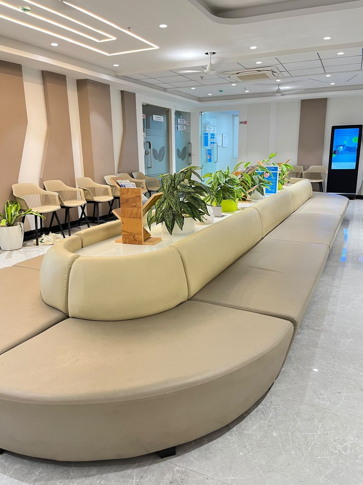

Acute appendicitis
Sudden pain, fever and vomiting. The most common form.
In short: Prompt laparoscopic appendectomy for appendicitis, with round-the-clock access to surgeons and a quick, comfortable recovery after the operation. After a private examination, we explain the right option for you.
Led by Dr. Abhijeet Suresh Shinde, General & Laparoscopic Surgeon and Consultant Proctologist.

Appendicitis is inflammation of the appendix. It usually begins with pain around the navel that shifts to the lower right abdomen, often with fever, nausea and loss of appetite.
Without treatment, the appendix can burst and cause a serious infection, so early evaluation is essential. Most cases are treated with laparoscopic appendectomy, which uses small cuts and allows an early return home.
Sudden inflammation with pain, fever and vomiting. Usually needs surgery.
Burst appendix or abscess. Needs urgent care and a longer recovery.
Appendicitis is not the same for every patient. Knowing which approach suits you helps us plan treatment properly.
Sudden pain, fever and vomiting. The most common form.
The body walls off the infection; treated in stages.
A collection of pus that may need drainage first.
Repeated mild attacks that settle and return.
Severe, spreading abdominal pain, a hard abdomen or high fever can mean the appendix has burst and needs emergency care.
Several conditions can feel alike. This table is a rough guide; only an examination can confirm the cause.
| Feature | Appendicitis | Gastro / stomach infection | Urine or kidney stone |
|---|---|---|---|
| Pain site | Moves to lower right abdomen | Cramps all over the abdomen | Loin or groin |
| Other signs | Fever, loss of appetite | Loose motions, vomiting | Burning or blood in urine |
| Course | Worsens over hours | Often settles in a day or two | Comes in waves |
| Confirmed by | Examination, ultrasound or CT | Examination | Urine test, ultrasound |
Appendicitis usually starts when the opening of the appendix is blocked, for example by hard stool, swollen tissue or infection.
The blocked appendix then swells and becomes infected, which is why pain gets worse over hours.
Diagnosis is simple, quick and done in privacy. You are told what is being done at each step.
Pain pattern, fever, appetite and vomiting.
Gentle abdominal examination to find the tender spot.
Check for infection and rule out urine problems.
Ultrasound, or CT when the diagnosis is unclear.
In many people the diagnosis is made on examination and ultrasound, and surgery is planned promptly.
The choice between non-surgical care and surgery depends on your findings, symptoms and health. This table is a guide, not a prescription.
| Stage | Usual first approach | When a procedure may be considered |
|---|---|---|
| Early appendicitis | Antibiotics in selected cases | Surgeon judges it safe; most still need surgery |
| Acute appendicitis | Laparoscopic appendectomy | Usually advised without delay |
| Appendix abscess or lump | Antibiotics, drainage, interval surgery | Staged care by the surgeon |
| Burst appendix | Urgent surgery | Wash-out and longer recovery |
Many patients start with non-surgical care. It works best in the early stage, and Dr. Shinde starts here whenever it is safe and sensible.

Small daily changes make a big difference to treatment, and they also lower the chance of appendicitis returning.
Return to your normal diet slowly as you feel comfortable.

Surgery to remove the appendix is the most reliable treatment. It is usually done by keyhole technique with a short hospital stay.
| Option | Suited to | Things to know |
|---|---|---|
| Laparoscopic appendectomy | Most patients with appendicitis | Small cuts; less pain; short stay |
| Open appendectomy | Burst appendix or difficult cases | Used when keyhole is unsafe; longer recovery |
| Drainage plus interval surgery | Appendix lump or abscess | Done in stages with antibiotics |
The appendix is removed through small cuts using a camera, with less pain and a quicker return to routine.
Our emergency surgical team is available round the clock, and we explain every step to you and your family.
Private discussion and examination.
Tests only where needed.
Non-surgical or surgical, explained.
Done as day-care where possible.
Recovery checks and guidance.
Most patients return to normal activity within one to two weeks after keyhole surgery. We give clear instructions for wound care, diet and activity after discharge.

Call us for fever, severe pain, repeated vomiting, wound redness or discharge, or a swollen abdomen.
Call NowHelps keep stools soft.
See a doctor for lasting right-sided pain.
Painkillers can hide the signs.
Drink enough water.
Review after treatment as advised.
Appendicitis does not settle with home remedies. Waiting can let the appendix burst.
Pus spreads inside the abdomen.
A painful pocket of infection.
A dangerous abdominal infection.
Late surgery means more recovery time.
Painkillers can hide the signs while the appendix worsens.
Keyhole surgery leaves small marks.
You can live a normal life without it.
It can occur at any age.
Hover or tap a card to see the fact.
There is no single price for appendicitis in Kharadi, Pune. Your surgeon explains the likely cost after examination, once the best treatment is clear. Cost is explained before you decide, not after.
Consult Dr. Abhijeet Suresh Shinde for appendicitis at DISHA Advanced Surgical & Laser Piles Clinic.
General & Laparoscopic Surgeon and Consultant Proctologist with specialised training.
A track record in clinical and surgical experience.
We say when surgery is not needed, and we explain every option.
A calm clinic near Manipal Hospital, Thite Nagar, Kharadi.
Explained after examination and before you decide.

What patients have written about their visit to our clinic in Kharadi, Pune, shown as posted on Google.

DISHA Advanced Surgical & Laser Piles Clinic
1st Floor, OPD No. 2, Survey No. 22/2, Ganga Altus, F Building, Cherry Life, Near Manipal Hospital, Thite Nagar, Kharadi, Pune 411014
Daily: 10:00 AM – 9:00 PM
Pain moving to the lower right abdomen, fever, vomiting and loss of appetite. Seek medical care promptly if these appear.
Some mild cases may be managed with antibiotics, but surgery is the most reliable treatment. Your surgeon will advise.
Most patients return to normal activity in one to two weeks after keyhole surgery.
Often yes. If the appendix may burst, surgery is done promptly after assessment.
Yes. Every consultation and examination is private, respectful and judgement-free.
Call or WhatsApp +91 97668 15782, or use the online booking form. The clinic is open daily from 10 AM to 9 PM.
Cost depends on the treatment chosen. Your surgeon explains the likely cost after examination, before you decide.
Many procedures are done as day-care or a short stay, depending on your condition and fitness. Your surgeon will advise.
A short, private consultation with Dr. Abhijeet Suresh Shinde in Kharadi, Pune.
This page is general information and does not replace a personal medical opinion. Treatment decisions are made after examination.